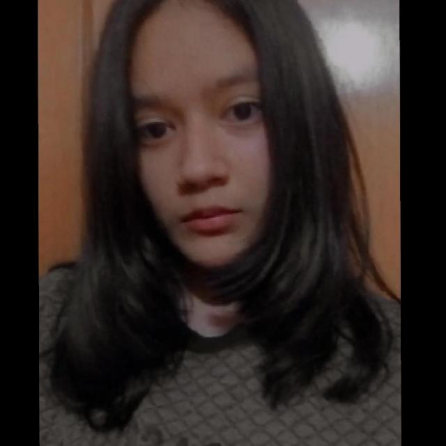

Biografías

Geraldine Trejo Martinez
(2005 - a la fecha)
Geraldine Trejo Martínez nació el 14 de mayo del 2005 tiene solo
una hermana llamada Roció Trejo Martínez, sus papas son María Rosa y Gerardo,
ella tiene los estudios hasta la prepa pero actualmente sigue estudiando ya que
le faltan dos semestres para terminarla, ella tiene dos etapas favoritas de su
vida, su primer etapa favorita fue cuando tenia 3 años ya que a ella le gusto
mucho su fiesta, y su segunda etapa favorita en su vida fue todo el ciclo
escolar de la primaria, ella iba en la escuela Rafael Ramírez Castañeda, pero solo paso cinco
años en esa escuela ya que entro desde segundo año, extraña mucho a sus ex
compañeros pero tiene la suerte de que algunos de sus amigos viven cerca de su
casa y los puede ver a veces, de sus peores etapas fue cuando paso a la
secundaria ESOE de Irapuato ya que no tuvo muchos recuerdos bonitos con sus ex
compañeros.
Actualmente tiene 17 años y ahora estudia en el cbtis65, sus
amigas en la prepa son Mariana y Ana Laura, en ellas son las que más puede
confiar.
Mariana Torres Aldaco
(2005 - a la fecha)
Nació el 1 de Septiembre del 2005, en Irapuato, Guanajuato,
México.
Estudió en la Escuela Primaria “Bicentenario de la
Independencia de México de 1810” y en la Secundaria “Centenario de la Constitución
de México de 1917”, actualmente estudia en la preparatoria conocida como “CBTis.
No.65”.
Cuando estaba en primaria padeció de anemia unos 2 años
aproximadamente y se recuperó, es la única hija entre 3 hijos de los cuales 2
son hombres, tiene una mascota de raza chihuahua hembra, estudia programación y
quiere ser Educadora.
Durante su enfermedad no comía alimento alguno ya que la
anemia provocaba que no le diera hambre y se sintiera cansada la mayor parte
del tiempo, por lo cual la llevaban a hacer estudios de sangre aproximadamente
cada mes para ver sus progresos o retrocesos en la enfermedad; actualmente
cuenta con una buena salud y buenas amistades con las que comparte buenos y
malos momentos. Su grupo favorito de k-pop se llama Astro,
y su meta es aprender a hablar bien el ingles para despues aprender coreano e ir a uno de sus conciertos.
Ana Laura Vilchis Estrada
(2005 - a la fecha)
Nació en el mes de enero del 2005, tiene dos hermanas, una mayor y una menor, siendo ella la hermana/hija del medio.
Estudió la primaria en la “Escuela Primaria Urbana No.18 Rafael Barba Pérez”.
Continuó sus estudios en la “Secundaria Oficial Estatal” o “ESOE”.
Actualmente estudia la preparatoria en el “CBTis No.65” en el turno vespertino en la especialidad de Programación.
Le gusta todo tipo de arte, le gustaría estudiar algo relacionado a ella, le gusta todo tipo de música también y sus grupos favoritos son 5sos y Stray Kids.
Está estudiando el idioma Inglés, le gustaría poder hablarlo de manera fluida muy pronto, puesto que le gustaría viajar
y poder conocer a sus artistas favoritos y poder hablar con ellos de forma correcta,
además de que le gustaría leer un sin fín de libros en inglés.